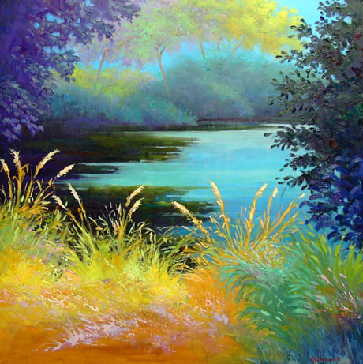
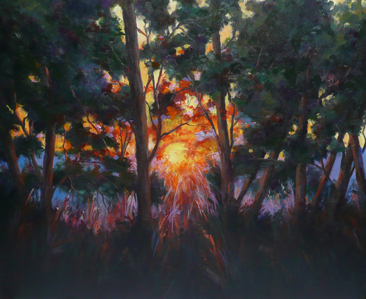

Pintor mallorquín · 1953 — 2017
La luz deMallorca,convertidaen pintura.
Antoni Mas Rexach dedicó su vida a pintar su tierra: sus campos, sus pueblos, su luz. Tres décadas de exposiciones avalan una obra que ya es parte del paisaje cultural de la isla.
Albufera — Óleo sobre tela — 92 × 92 cm


